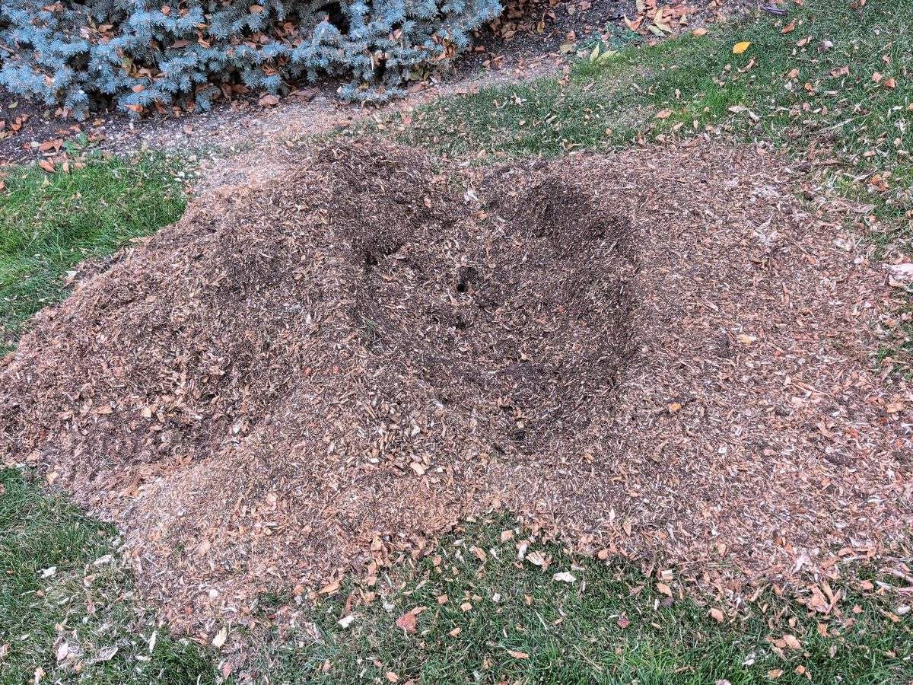
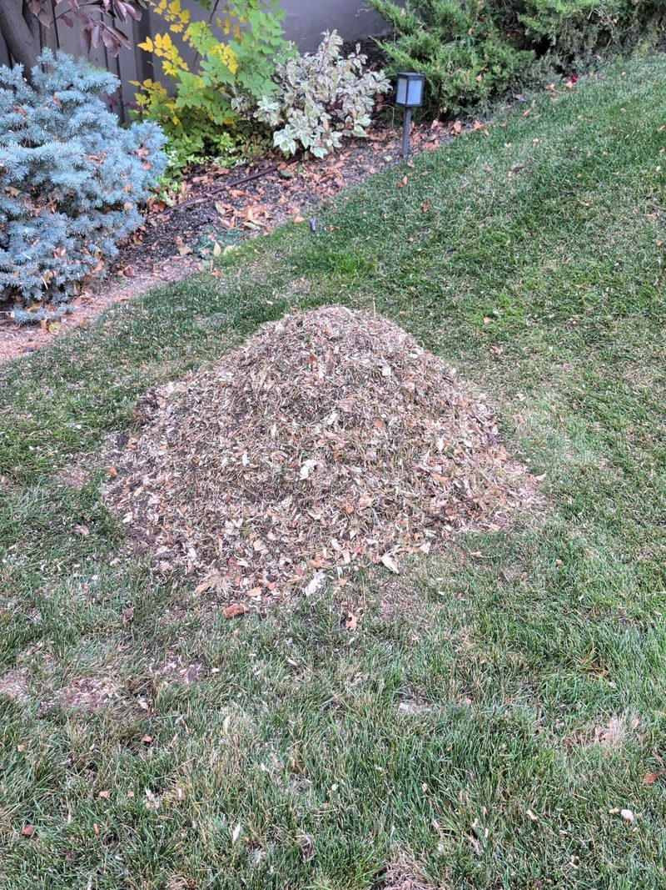

Tree Service in Salt Lake City, Utah
Tree removal, trimming & stump grinding in Salt Lake City — Sugar House, the Avenues, Rose Park, and the East Bench, about 20 minutes from our West Jordan home base.
Tree Services in Salt Lake City
Full-service tree care in Salt Lake City, plus firewood and landscaping materials delivered by the same local crew. Every tree job starts with a free, in-person estimate — call or text (801) 330-1444.
Tree Removal
Safe removal of dead, hazardous, or unwanted trees in Salt Lake City — taken down in sections where space is tight, with full cleanup. Tree removal details →
Trimming & Pruning
Shape, clearance, and health pruning that keeps Salt Lake City trees strong through wind season and heavy snow years. Trimming details →
Stump Grinding
Stumps ground below grade with cleanup — ready for sod, garden beds, or new planting. Stump grinding details →
Emergency Tree Service
Storm-damaged limbs, fallen trees, and blocked driveways handled around the clock in Salt Lake City. Emergency service details →
Land Clearing
Lot clearing and brush removal for builds, fences, and property projects in Salt Lake City. Land clearing details →
Firewood Delivery
Seasoned, ready-to-burn firewood delivered to Salt Lake City: $149 quarter cord, $199 half cord, $349 full cord. Firewood details →
Materials Delivery
Topsoil $350/load, gravel $575/load, road base $375/load, and mulch $50/cubic yard — delivered in Salt Lake City, Salt Lake Valley delivery included. Materials details →
Free Estimates
Straightforward, in-person quotes with no pressure. Call or text (801) 330-1444 and we'll come take a look.
Tree Care From the Avenues to the East Bench

Salt Lake City has the oldest, biggest tree canopy in Utah. The Avenues, Capitol Hill, and Sugar House are full of mature elms, maples, and sycamores planted generations ago — beautiful trees that now need real maintenance: deadwood removal, weight reduction, and honest assessments before age and wind make the decision for you. The September 2020 east-wind storm knocked down thousands of trees across the city in a single morning, and plenty of the survivors are still carrying damaged limbs and unions that should be looked at.
- Mature canopy pruning and honest tree assessments
- East-wind and storm damage response, 24/7
- Tight-lot removals in historic neighborhoods
- Stump grinding and full debris cleanup
West of downtown, Rose Park, Fairpark, and Glendale have younger plantings growing into their space, and the East Bench and Foothill neighborhoods deal with canyon winds and big bench lots. Tight historic-district yard or wide-open foothill property — we serve the whole city, with free in-person estimates and full cleanup on every job.
Neighborhoods & Areas We Serve Near Salt Lake City
Fast response in Salt Lake City and the surrounding valley:
Salt Lake City is a straight shot up I-15 from our West Jordan home base — and we also serve Park City & Summit County on scheduled route days. Get a free estimate →
Recent Work in Salt Lake City: Stump Grinding
No before photos on this one — just the finished work. Two stumps at a Salt Lake City home, ground out below grade with the grindings leveled into the lawn.


Frequently Asked Questions
Quick answers to the questions we hear most from Salt Lake City homeowners — the same ones people ask Siri, Alexa, and Google.
Do you offer free estimates in Salt Lake City?
Yes — every Salt Lake City job starts with a free, in-person estimate. Call or text (801) 330-1444 and we'll come take a look at your trees and give you an exact price before any work begins.
Do I need a permit to remove a tree in Salt Lake City?
For trees on your own property, no city permit is required. Trees in the park strip (between the sidewalk and the street) are city trees managed by Salt Lake City's Urban Forestry program, so that work goes through the city — we're happy to look at both during a free estimate and point you the right way.
Can you remove a tree in a tight Salt Lake City yard?
Yes. Most removals in older neighborhoods like the Avenues and Sugar House are done in small, controlled sections, so we can take a tree down even when it's close to your house, fences, or power lines. We'll confirm the plan when we visit for your free estimate.
Do you handle storm and wind damage in Salt Lake City?
Yes — we're available 24/7 for everything, including storm and east-wind damage: fallen trees, broken limbs, and blocked driveways. Call or text (801) 330-1444 any time of day or night.
Do you clean up and haul away the debris in Salt Lake City?
Yes — every job finishes with a full cleanup. We haul off the trunk sections and brush and tidy the work area before we leave, so your yard is ready to use again.
How much does stump grinding cost in Salt Lake City?
It depends on the stump's diameter, how many stumps you have, and access for the grinder — a small backyard stump is quick work, while a large parkway stump takes longer. That's why every job starts with a free, in-person estimate: we measure, give you an exact price, and there's no charge if you decide not to go ahead.
How much does tree removal cost in Salt Lake City?
Removal pricing turns on the tree's size and height, how close it is to your house, fences, and lines, and whether it can come down whole or has to come down in sections. We price it exactly at a free in-person estimate before any work begins — call or text (801) 330-1444.
How fast can you come out to Salt Lake City?
We're based in West Jordan, about 20 minutes away, so Salt Lake City estimates are usually quick to schedule — most valley jobs get same-week service. For emergencies, we're available 24/7. Call or text (801) 330-1444 and we'll give you the soonest time we have.
Do you deliver firewood in Salt Lake City?
Yes — seasoned, ready-to-burn firewood delivered to Salt Lake City: $149 quarter cord, $199 half cord, $349 full cord, with Salt Lake Valley delivery included. Stacking is available for $45 (half cord) or $65 (full cord). See our firewood page or call or text (801) 330-1444 to order.
Do you deliver landscaping materials in Salt Lake City?
Yes. Topsoil $350/load, gravel $575/load, road base $375/load, and mulch $50 per cubic yard — delivered in Salt Lake City with Salt Lake Valley delivery included. Fill dirt, compost, sand, and decorative rock are available too. See our materials page for the full list.
When is the best time to trim trees in Salt Lake City?
For most shade trees, the dormant season — late fall through late winter — is ideal: the structure is visible and the tree puts its spring energy into fresh growth. Deadwood, broken limbs, and clearance problems can and should be handled any time of year. Fruit trees are best pruned in late winter.
Which trees cause the most problems in Salt Lake City?
Siberian elms seed themselves everywhere and turn brittle with age, silver maples grow fast but weak and are prone to storm splits, and Russian olives are invasive and short-lived. Older ash and elm across the city also need watching for decline. A free assessment will tell you honestly whether a problem tree needs pruning, treatment time, or removal.
Can you plant a new tree where a stump was ground out?
Yes, with a little extra work: we grind deeper and haul the grindings out so fresh soil can go in. Many homeowners prefer to plant a few feet over from the old spot — we'll walk through both options at your free estimate and tell you which makes more sense for that tree and that spot.
Do you work through the winter in Salt Lake City?
Yes — we're open 24/7, all year. Winter is actually prime time for pruning and removals while trees are dormant, and when snow or ice brings limbs down, we handle that around the clock too.
What should I do if a tree falls on my house or fence?
First, keep people and pets clear of the tree and any downed lines, and call the power company if lines are involved. Take photos for your records, then call or text us at (801) 330-1444 — we're available 24/7 and can make the tree safe, get it off the structure, and clean up the debris.
How can I tell if my Salt Lake City tree is dead or dying?
Warning signs: branches that never leaf out in spring, brittle twigs that snap instead of bending, bark peeling away from the trunk, mushrooms or fungal growth at the base, and a lean that's new or getting worse. If you see any of these, a free assessment is worth it — catching a declining tree early is safer and usually cheaper than an emergency removal later.
Do you trim trees near power lines in Salt Lake City?
We take down and trim trees close to houses, fences, and lines every day. For limbs growing directly into overhead power lines, the utility's line-clearance crews handle the line side itself — at your free estimate we'll tell you plainly which parts are ours to do and which are theirs.
Contact Us — Free Estimates
Call, text, or send the form and we'll get back to you fast.